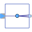

RoutingLibrary of blocks to combine and extract signals |
|
Package Contents
|  |
Signal replicator |
|
Extract signals from an input signal vector |
|
|
Extract scalar signal out of signal vector dependent on IntegerRealInput index |
|
|
Pass a Complex signal through without modification |
Information
This information is part of the Modelica Standard Library maintained by the Modelica Association.
This package contains blocks to combine and extract signals.